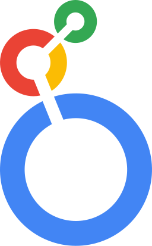

6+ years connecting data engineering with business intelligence. I build Power BI dashboards, reusable DAX measures, and trusted analytical models across healthcare, media, telecom, and financial services.
Built on data. Designed for decisions.Power BI · Semantic models · Insights
▥ Power BI reportingƒx DAX & time intelligence◇ Semantic modeling⇄ End-to-end data delivery
Portfolio lab / 01—03
Data you can explore.
Interactive dashboard concepts inspired by my reporting domains.
ANALYTICS WORKSPACE
Synthetic data · Portfolio demonstration
Healthcare claims overview
Explore claim volume, paid amounts and denial rates.
Monthly claim volume
Claim status
Model, measures & sample data
Sample monthly dataset used by this dashboard
These are browser-built demonstrations using synthetic data, not embedded Power BI reports or client results. Professional experience is described separately below.
Experience behind the insights.
Selected professional work, based on my résumé.
Survik Software Pvt. Ltd. · May – Sep 2026
Asurion Channels Modernization
Power BI reporting for SMS, Direct Mail, Email and POM processing, supported by SQL Server and SSIS workflows.
Power BIDAXSQL ServerSSISAzure DevOps
Explore my contribution
Tracked processed volumes, inserts, updates, success/failure, duplicates and missing configurations.
Developed reusable DAX measures and reporting models with filters and drill-down paths.
Supported deduplication, null-safe change detection, audit controls and source-to-target reconciliation.
01
Channel operations, made visible.
Volume → Quality → Reconciliation
Mirra Healthcare · Mar 2024 – Jan 2026
Healthcare Claims Analytics
Claims dashboards and reporting models for paid, denied and pending claims, financial amounts and monthly trends.
Power BIDAXPower QueryADFSQL
Explore my contribution
Built DAX measures for claim counts, distinct members, paid amounts, denial rates and MoM/YoY analysis.
Developed star-schema models, slicers and drill-through for claims exploration.
Supported ADF and SSIS loads, 837 healthcare data and reconciliation checks.
02
A clearer view of claims.
Claims → Model → KPI dashboard
News Corp / News UK Tech · Jan 2022 – Mar 2024
Subscription & Customer Analytics
Customer, subscription, payment and revenue datasets for analytical reporting and business KPI monitoring.
Power BIBigQueryGCPAirflowSQL
Explore my contribution
Supported Power BI reporting with GCP and BigQuery analytical datasets.
Built automated data pipelines and processed 13 months of historical data.
Applied partitioning, clustering and pruning; investigated failed Airflow DAGs.
03
Connecting audiences and revenue.
Events → BigQuery → Analytics
NetAmbit · Oct 2019 – Jan 2022
Financial Services Data Warehouse
SQL Server warehouse and BI reporting for customer, credit-card and financial-services data at East West Bank.
Power BISQL ServerSSISSSRST-SQL
Explore my contribution
Developed customer, transaction and operational reporting with reusable DAX and drill-down views.
Built fact/dimension structures, T-SQL objects and SSIS flat-file integration.
Validated source-to-target results and tuned queries with indexing and execution plans.
04
Reliable foundations for reporting.
Sources → Warehouse → Reporting
The journey so far.
Business intelligence backed by production data engineering.
May 2026 — Sep 2026
Senior IT Consultant / Senior BI & Data Engineer
Survik Software Pvt. Ltd.
Client: Bridgetree / Asurion
Mar 2024 — Jan 2026
Database Developer-I / BI & Data Engineer
Mirra Healthcare Services India Pvt. Ltd.
Jan 2022 — Mar 2024
Data Engineer / BI Developer
News Corp
Oct 2019 — Jan 2022
Software Engineer / SQL & BI Developer
NetAmbit
Tools behind the work.
From source systems to semantic models and business decisions.
My technology toolkit
▥Power BIDashboards & visual analytics
ƒxDAXMeasures & time intelligence
⤨Power QueryTransform & prepare data
◇Star schemaFacts & dimensions
Google CloudBigQuery · Storage · Pub/Sub
SQL ServerSQL · T-SQL · SSIS
Azure Data FactoryETL & orchestration
Apache AirflowDAGs · Cloud Composer
Visual StudioSSDT
GitHubVersion control
Azure DevOpsCI/CD
PythonExposure

Looker StudioReporting
▥Power BIDashboards & visual analytics
ƒxDAXMeasures & time intelligence
⤨Power QueryTransform & prepare data
◇Star schemaFacts & dimensions
Google CloudBigQuery · Storage · Pub/Sub
SQL ServerSQL · T-SQL · SSIS
Azure Data FactoryETL & orchestration
Apache AirflowDAGs · Cloud Composer
Visual StudioSSDT
GitHubVersion control
Azure DevOpsCI/CD
PythonExposure
Looker StudioReporting
BI & visual storytelling
Power BIDAXPower QueryKPI cardsDrill-throughSSRSLooker StudioTableau
Models & measures
Star schemaFact / dimensionCALCULATESUMXTime intelligenceMoM / YoYRLS concepts